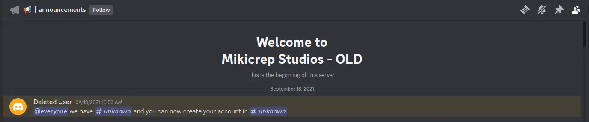
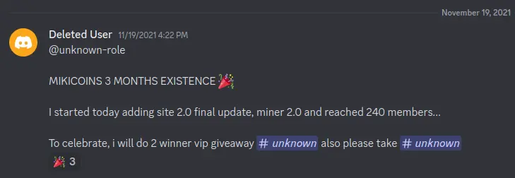
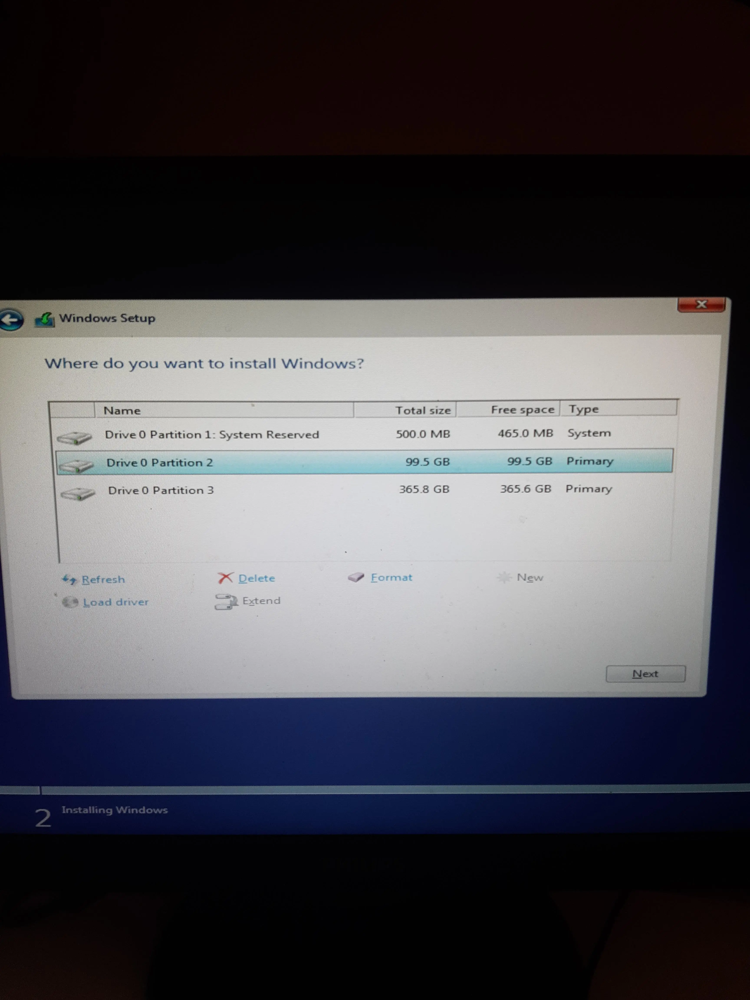
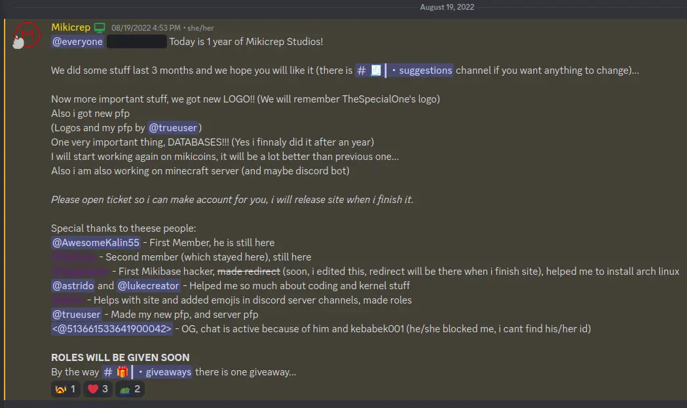
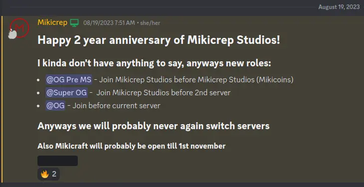

It was 19.08.2021 and I was bored.
I decided to start "company" and first name I thought of was Mikicrep Studios.
I made discord server for it and made channels.
First annoucement was on 18th september 2021.

I forgot what was it but my guess is that it was "@everyone we have #tickets and you can now create accounts in #tickets".
Account creation was manual back then.
You needed to open ticket and send me your username and I would send you token.
I shortly after (21.9.2021) annouced tha mikicoins were 95% finished and I just needed to finish shop (which i never did lol).
Also miner existed which would just print few random numbers and you had to screenshot output.

This was original server icon btw, also Mikicoins logo and server name was "Mikicoins" back then.
8.10.2021 Server got first moderator!
15.10.2021 I annouced Mikicrep OS and made discord server for it which doesnt exist anymore.
21.10.2021 Server hit 75 members!
22.10.2021 Mod apps got closed and we got 3 more mods.
6.11.2021 We got our server botted by someone named 512long. I got no idea how that happened anyways we got like 200 new members.
19.11.2021 3 Months of Mikicoins.

3.12.2021 Mikicoins started dying.
6.12.2021 Server got reworked and finnaly became Mikicrep Studios.
12.12.2021 I annouced our first game called "SCRG (Some Random Clicker Game)"!
It was made in Microsoft NET framework.
18.12.2021 I made this github site and we switched to it (old URL was mikicrep.000webhostapp.com).
This github site was also abandoned for long time.
19.12.2021 I made my own economy discord bot which was used to gain Mikicoins (250 of its cash = Mikicoin).
25.12.2021 Our old Minecraft server was released.
It didnt last that long.
30.12.2021 I made afk page trying to moneteize this using arc.io.
I will never do it again it was terrible.
31.12.2021 HAPPY NEW YEAR 2022!!!
6.1.2022 I annouced new game "SRLS (Some Random ??? Simulator? (i forgot full name if i remember it i will update this))"!
12.1.2022 My discord account got banned. That marked end of our first discord server.
There used to be ownership alt but i switched to a40 and didnt backup 2fa so I lost that account.
22.1.2022 Start of our 2nd discord server.
1.2.2022 I released 2 android apps
18.5.2022 I accidentally formatted my hdd :moyai:
(right click>open image in new tab)
20.5.2022 I released Miki# programming langunage!
19.8.2022 1 Year of Mikicrep Studios!

New logo is our current logo
13.10.2022 Mikicoins 2.0 released!
31.12.2022 HAPPY NEW YEAR 2023!!!
24.6.2023 Accidentally formated my hdd again
21.7.2023 Made Mikicrep Studios subreddit!
4.8.2023 Discord banned my acc again, I thought that they wont restore it so we moved to another (current) discord server
9.8.2023 Mikicraft Opened!
19.8.2023 2 Years of Mikicrep Studios!

Also og roles will never be awarded again
30.10.2023 Accidentally formated my hdd again...
20.12.2023 Proper rules
31.12.2023 HAPPY NEW YEAR 2024!!!
12.6.2024 Switched back to github on new domain
17.7.2024 Released our first CLI tool: Random File Chooser
19.8.2024 3 Years of Mikicrep Studios!

19.8.2024 Released Mikicrep Studios Site 4.0 to public
19.8.2024 New domain miki.macakom.net. We will be there for long time
19.8.2024 Released Random SDL Game
19.8.2024 Released our second CLI tool: Random Gibberish Generator
19.8.2024 Released our first Roblox game: Part Summoner Simulator
26.10.2024 Released our third CLI tool: Git HTTP To SSH
7.11.2024 Released another game called Angry AI